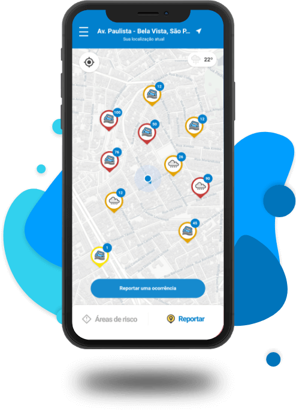

Tecnologia contra Enchentes

Aplicativos móveis enviam alertas personalizados com base na
localização do usuário (via GPS), indicando rotas de fuga, abrigos e
previsão de chuva.
Satélites captam imagens antes, durante e depois das chuvas. A
inteligência artificial analisa padrões para prever enchentes e
mapear áreas de risco.
Dispositivos instalados em rios e bueiros que medem em tempo real o
nÃvel da água. Enviam alertas automáticos quando há risco de
transbordamento.
As enchentes no Brasil causam impactos devastadores. A tecnologia pode
ajudar com sensores, alertas e inteligência de dados.